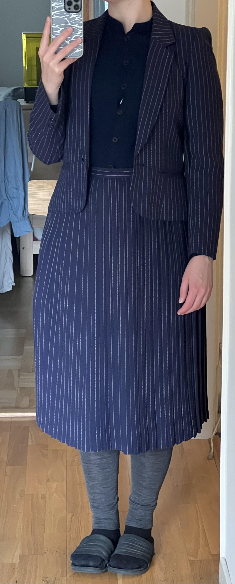
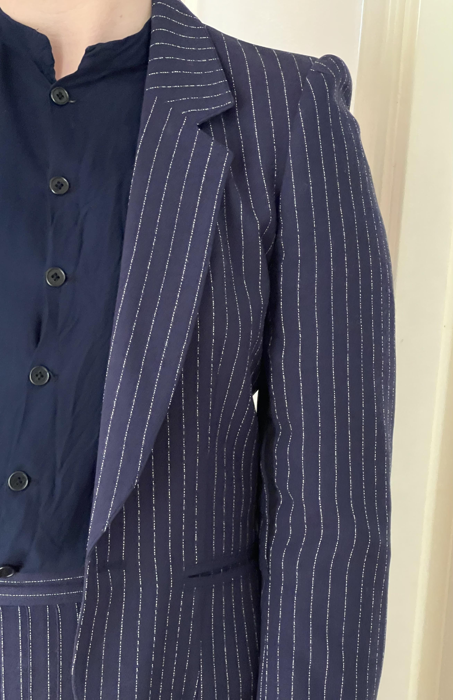
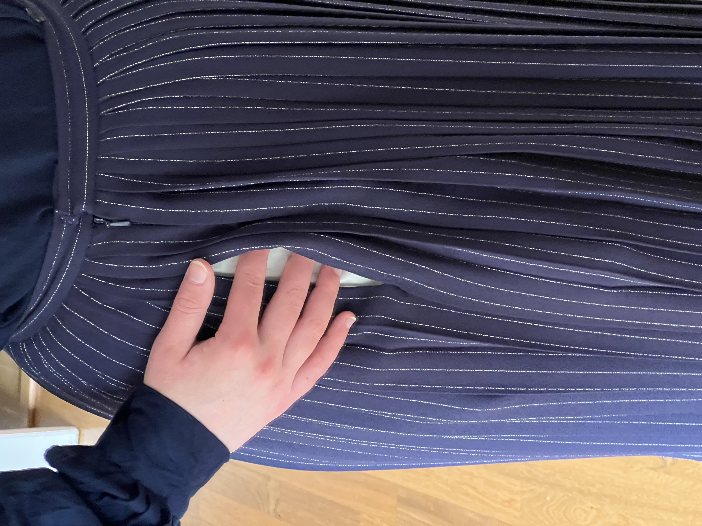
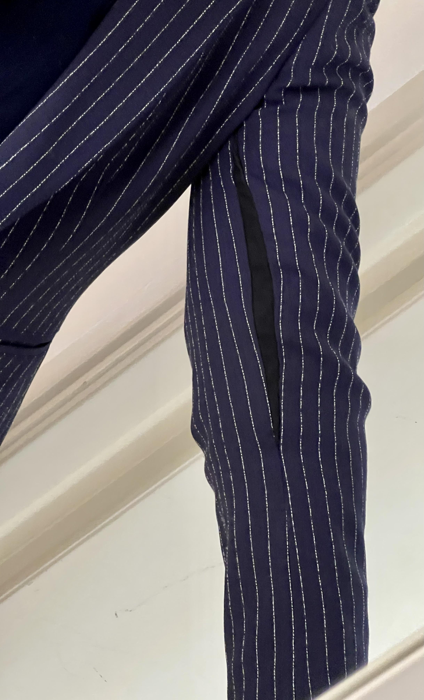

Blue Pinstripe suit
I found this mansfield skirt suit at Myrorna, it's from Mansfield, made in England, but it was a tiny bit tight in the sleeves for me. I added small inserts into the sleeves, and I also added a pocket in the skirt between the pleats. (I also made the shirt that I am wearing in these pictures, but it's really not very good so I won't write about it.)
   Flowy Lavender pants
I found these nice pants at a thrift store in berlin, and I adjusted the waistband and added a pocket.

Dolce & Gabbana pants
Difficult to tailor things for someone who's not you it turns out